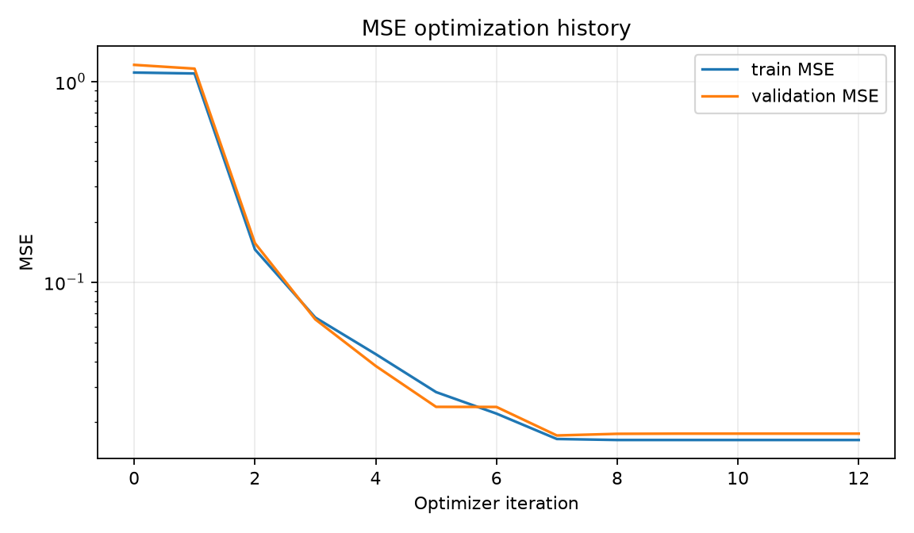
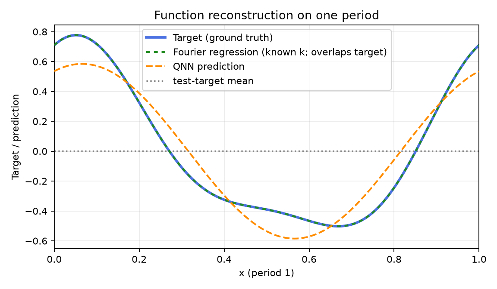
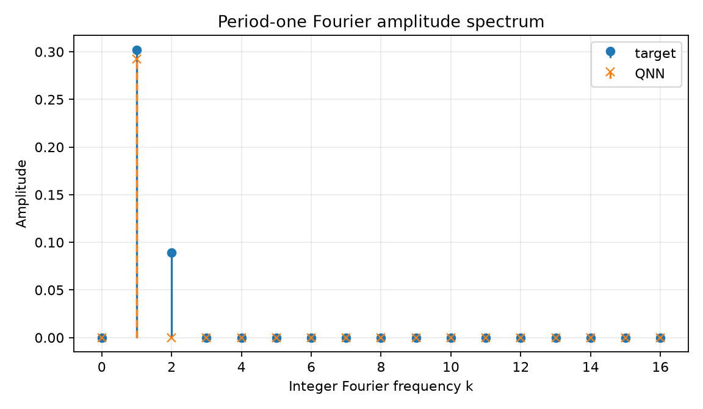
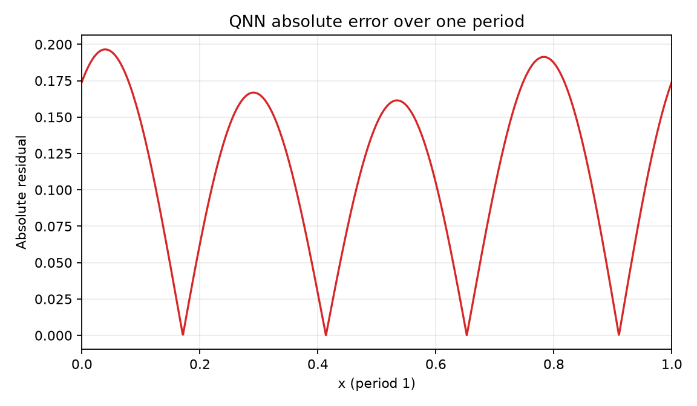
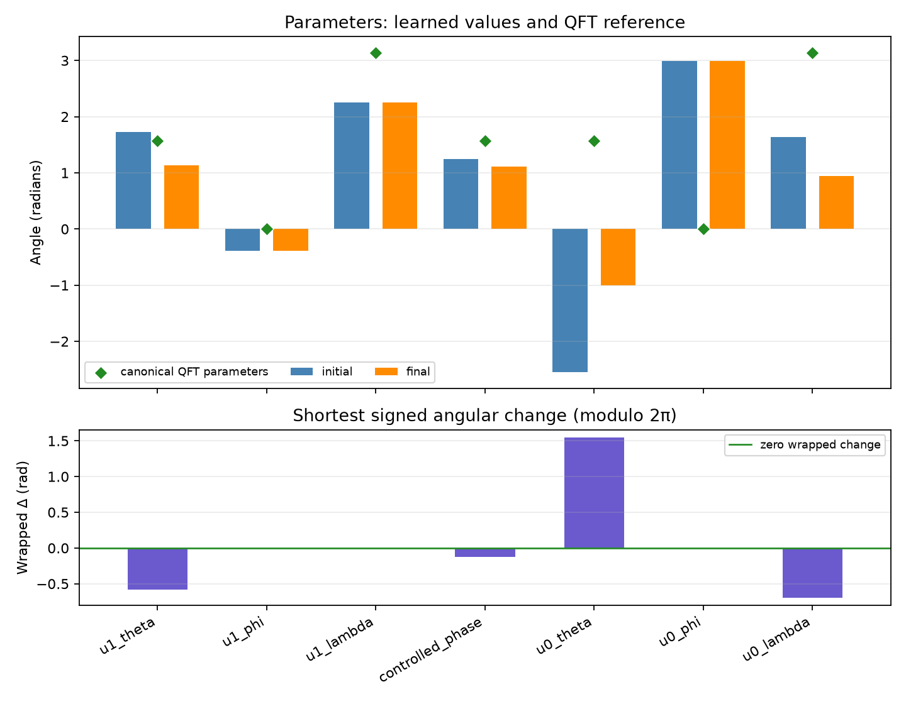

Comparison group: periodic-function-mse-k2-zero-offset-components-ry-angle-encoding-z1-readout
Training loss: MSE only; no Frobenius/process-fidelity term or PINN residual.
Encoding: RY(2πx)|0⟩ on qubit 0, x∈[0,1), period 1.
Readout: ideal Pauli-Z expectation on qubit 1.
Absolute error over one period: mean=0.114289, max=0.196503; defined pointwise as |QNN prediction − target| on the 2048-point periodic grid.
{
"run_id": "20261017T020256114753Z_periodic-function-mse-k2-zero-offset_seed-0042_cbc825e0",
"status": "FINISHED",
"comparison_group": "periodic-function-mse-k2-zero-offset-components-ry-angle-encoding-z1-readout",
"protocol_version": "0.1.0",
"objective": "training-set mean squared error only",
"loss_excludes": [
"process fidelity",
"Frobenius/unitary alignment",
"PINN/physics residual",
"frequency labels"
],
"encoding": "RY(2*pi*x)|0> on q0; x in [0,1), period 1",
"ansatz": "qft2_trainable_u_cp_u_swap",
"readout": "Pauli-Z expectation on q1",
"seed": 42,
"data_seed": 314159,
"optimizer": "L-BFGS-B",
"dataset_sizes": {
"train": 64,
"validation": 128,
"test": 512
},
"target_offset": 0.0,
"target_components": [
{
"frequency": 1,
"cosine": 0.55,
"sine": 0.25
},
{
"frequency": 2,
"cosine": 0.16,
"sine": 0.08
}
],
"iterations": 12,
"function_evaluations": 144,
"optimizer_success": true,
"optimizer_message": "CONVERGENCE: NORM OF PROJECTED GRADIENT <= PGTOL",
"elapsed_seconds": 0.1740615250018891,
"initial_train_mse": 1.1080776094204272,
"final_train_mse": 0.016317001290239705,
"validation_mse": 0.01755291017778854,
"test": {
"mse": 0.01627189198718731,
"rmse": 0.12756132637750092,
"r2": 0.9174045893492117
},
"constant_baseline_test": {
"mse": 0.2032802999417505,
"rmse": 0.450866166330709,
"r2": -0.031841894238542556
},
"known_frequency_fourier_baseline_test": {
"mse": 1.9968722039537117e-32,
"rmse": 1.413107286781054e-16,
"r2": 1.0
},
"spectral_coefficient_mse_k0_to_16": 0.00047730933807405945,
"dense_grid_absolute_error_mae": 0.11428876849885902,
"dense_grid_absolute_error_max": 0.19650304666565344,
"target_peak_frequency": 1,
"predicted_peak_frequency": 1,
"frequency_peak_correct": true,
"qft_process_fidelity_diagnostic_only": 0.5325424117847204,
"initial_qft_process_fidelity_diagnostic_only": 0.2993071074832549
}




